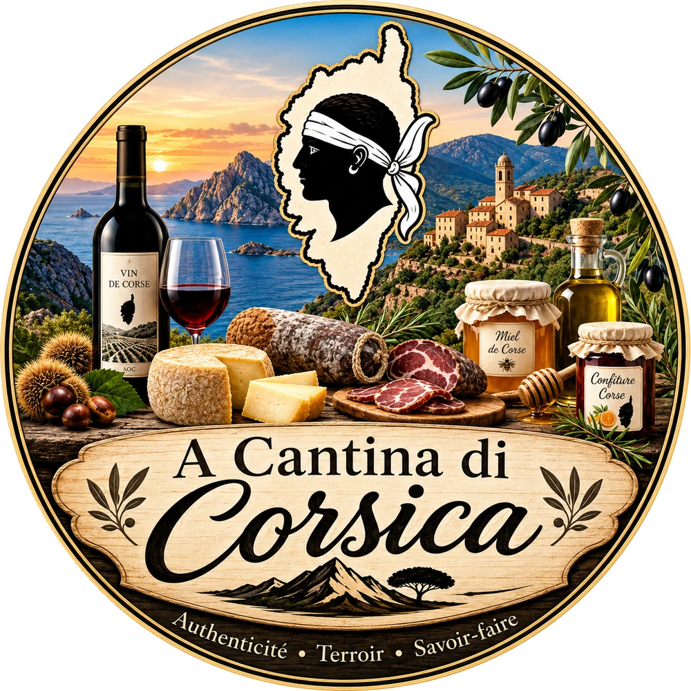

A Cantina di Corsica
Charcuterie
Fromage
Notre histoire
A Cantina di Corsica — Charcuteries & fromages corses

Faits maison, de la chasse à votre table.
Choisissez votre univers
Univers 01
Charcuterie
Sanglier du maquis, séché à l'air du village
Entrer
Univers 02
Fromage
Brebis corse, affiné sous la fougère
Entrer
La maison
Une seule paire de mains, du maquis à votre table
Découvrir notre histoire →